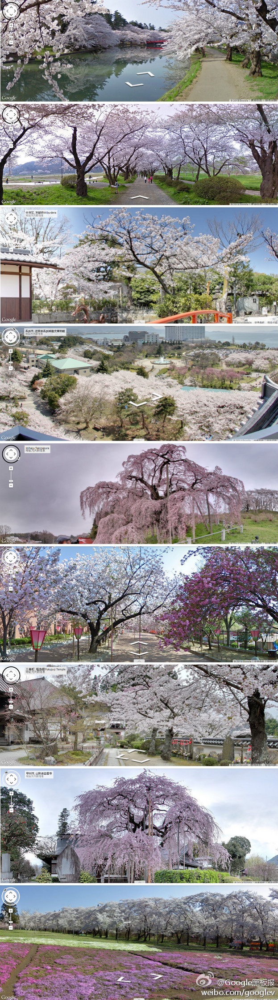

漂亮@Google黑板报:#Google全球汇#每年的3月15日到4月15日是日本著名的樱花节哦~在日本人眼里樱花是勤劳、勇敢、智慧的象征。春天一到，整个日本都沉浸在樱花的海洋之中，随Google漫步在漫天飞舞的樱花中，想想就觉得是件浪漫的事儿~网页链接 
前同事Alex @alexxanda 和Joey @沈卓立TouchChina 左图是2011年6月摄于香港，当时Alex在德意志银行香港工作，Joey为投资款到香港开帐号，我出差。右图摄是今天2014年3月于北京。- 能看出这几年的变化吗？[呵呵]
 网页链接
网页链接